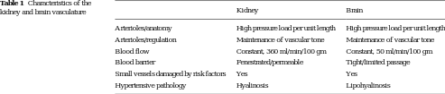

<?xml version="1.0" encoding="UTF-8"?>
<table title="table1" id="table1" class="tabcontent" xmlns="http://www.w3.org/1999/xhtml">
 <tr>
  <td>
   
   <p>corpus-oa-validation/10.1007_s12975-016-0499-x/tables/table1/table.svg.png</p>
  </td>
  <td>
   <table class="table">
    <caption/>
    <tr>
     <th class="cell">kidney and brain vasculature </th>
     <th class="cell">Kidney </th>
     <th class="cell">Brain </th>
    </tr>
    <tr>
     <td class="cell">Arterioles/anatomy</td>
     <td class="cell">High pressure load per unit length</td>
     <td class="cell">High pressure load per unit length</td>
    </tr>
    <tr>
     <td class="cell">Arterioles/regulation</td>
     <td class="cell">Maintenance of vascular tone</td>
     <td class="cell">Maintenance of vascular tone</td>
    </tr>
    <tr>
     <td class="cell">Blood flow</td>
     <td class="cell">Constant, 360 ml/min/100 gm</td>
     <td class="cell">Constant, 50 ml/min/100 gm</td>
    </tr>
    <tr>
     <td class="cell">Blood barrier</td>
     <td class="cell">Fenestrated/permeable</td>
     <td class="cell">Tight/limited passage</td>
    </tr>
    <tr>
     <td class="cell">Small vessels damaged by risk factors</td>
     <td class="cell">Yes</td>
     <td class="cell">Yes</td>
    </tr>
    <tr>
     <td class="cell">Hypertensive pathology</td>
     <td class="cell">Hyalinosis</td>
     <td class="cell">Lipohyalinosis</td>
    </tr>
   </table>
   <p>corpus-oa-validation/10.1007_s12975-016-0499-x/tables/table1/table.svg.html</p>
  </td>
 </tr>
</table>
